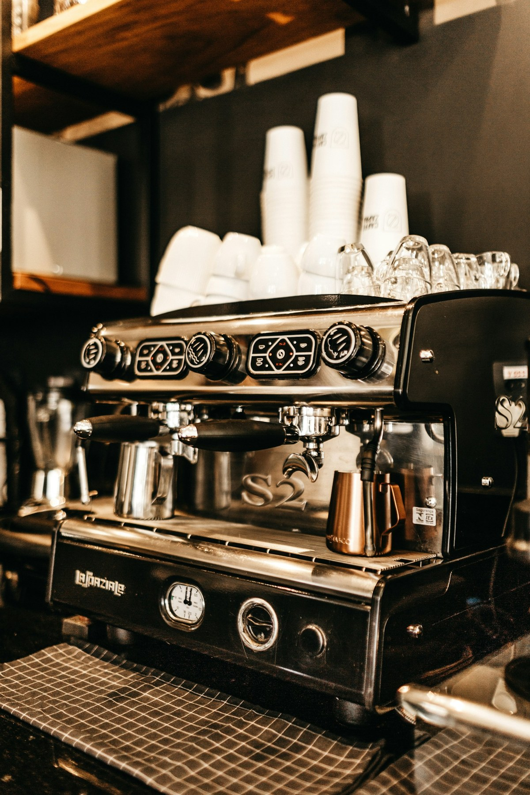

COMMERCIAL COFFEE EQUIPMENT
Built around the way you serve.
The right equipment supports your menu, your team and the rhythm of your business. Start with the conversation, then explore the right setup.
Discuss your setup
FIND THE RIGHT FIT
Consider the whole coffee bar.
Equipment choices work best when they are considered together with the space and the people using them.
01
Understand your service
Consider your menu, expected volume, available space and workflow.
02
Choose the components
Explore espresso machines, grinders, water filtration and the supporting equipment your operation may need.
03
Plan for operation
Discuss installation, staff training and the support needed to keep your coffee service running.
START THE CONVERSATION
Planning a new café?
Explore how equipment fits into the wider journey from idea to opening.
Explore café launch